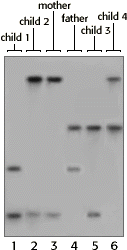

DNA Forensics Problem Set 1
Problem 2: Determining Paternity
| Results from a single locus probe DNA fingerprint analysis for a man and woman and their four children are shown in the autoradiograph to the right. Which child is least likely to be the biological offspring of this couple? |  |
A. Child 1B. Child 2
This was a tricky problem. If child 2 is the progeny of this man and woman, child 2 must have one band from each of them. However, child 2 appears to share two bands with the mother and none from the "father." Obviously, the mother could not have contributed both bands (alleles) to her child.C. Child 3
D. Child 4
E. NONE of the children.


The Biology Project
University of Arizona
Revised: September 2000
Contact the Development Team
http://biology.arizona.edu
All contents copyright © 1996-2000. All rights reserved.